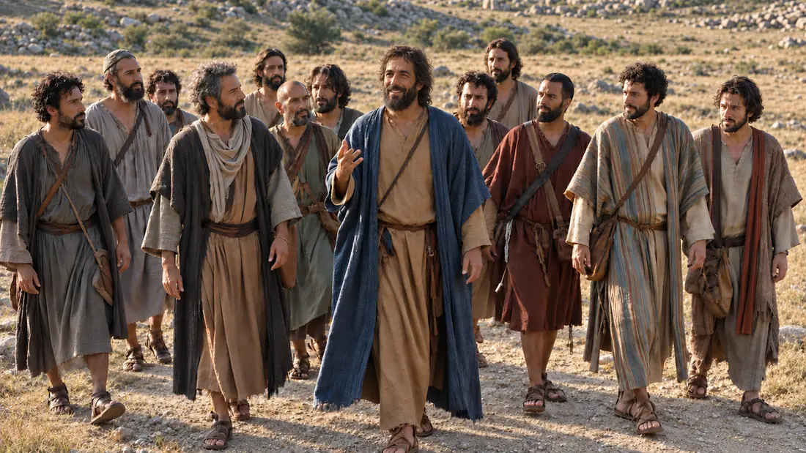
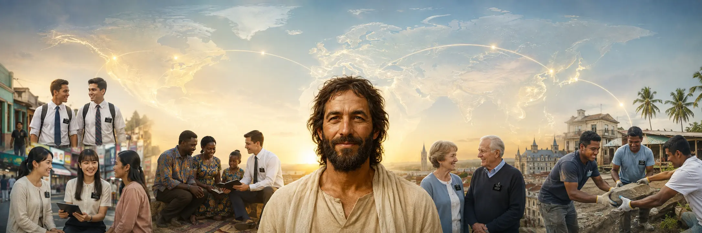
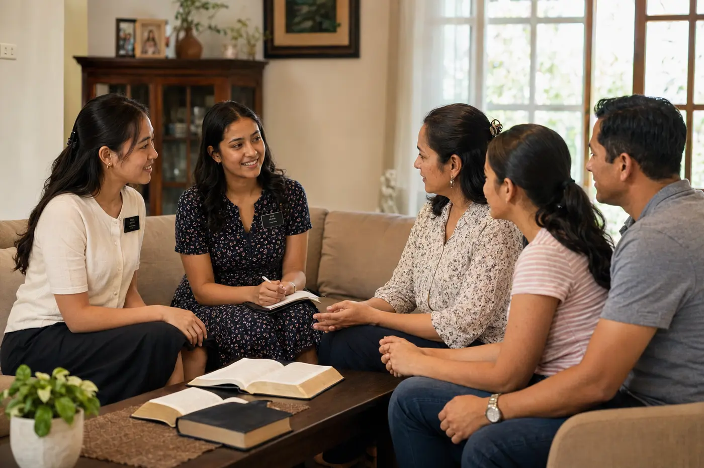
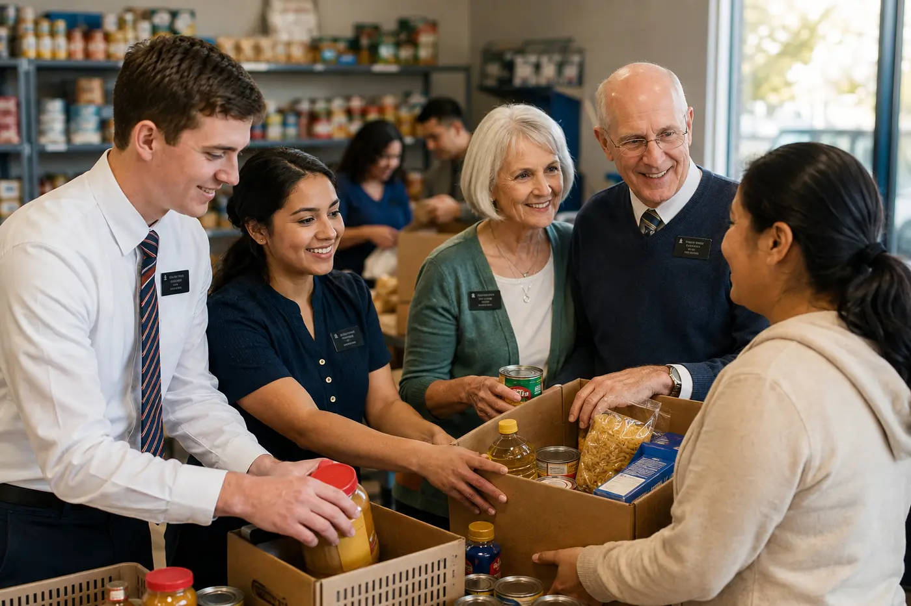
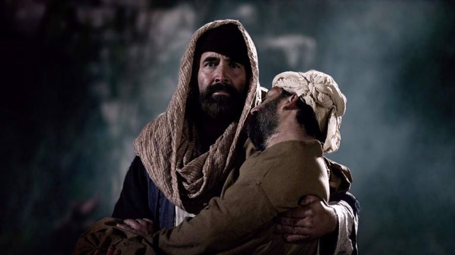

Teach of Jesus Christ
Missionaries study the scriptures, share the restored gospel, answer questions, and testify of the Savior.

His work throughout the world
Missionary work begins with love for God and His children. Missionaries listen, teach the restored gospel of Jesus Christ, invite people to follow Him, and serve wherever they are called.
“Go ye into all the world, and preach the gospel to every creature.” Mark 16:15Christ's commission
After His Resurrection, Jesus Christ sent His disciples to teach all nations, baptize in His name, and help people live what He taught. Latter-day Saint missionary work continues from that commission.
“Go ye therefore, and teach all nations.” Matthew 28:19Read the Savior's commission

Restoration and early missionaries
Missionary work began before the Church was formally organized and gathered momentum during Joseph Smith's lifetime.
Early believers shared the Book of Mormon and testified of the Restoration even before the Church's organization.
Joseph Smith's brother Samuel became the first missionary called after the Church was organized, carrying copies of the Book of Mormon through communities near Palmyra, New York.
Missionaries traveled through the United States and Canada and then to England and the Pacific, often serving at great personal sacrifice.
Missionaries serve among many cultures and languages while local members and leaders nurture faith in their own communities.
The missionary purpose
Missionaries do more than deliver a message. They help people build faith in Jesus Christ, turn toward Him, prepare for baptism, receive the gift of the Holy Ghost, and continue along the covenant path.
That work is personal. It happens through prayer, scripture study, sincere conversation, patient listening, invitations to act in faith, and continued friendship.
Faith expressed through action
Every assignment is different, but the work remains centered on Jesus Christ and the needs of God's children.
Missionaries study the scriptures, share the restored gospel, answer questions, and testify of the Savior.
They seek to understand each person, then offer simple invitations that help faith become personal action.
Missionaries lift burdens through practical service, community work, disaster cleanup, and everyday kindness.
They work with local members and leaders, support new friends, and help build belonging that continues after a visit.
A pattern for every disciple
Sharing the gospel is not limited to full-time missionaries. It can grow naturally from Christlike love, honest friendship, and respect for each person's agency.
Love
Pray for people, listen without an agenda, and serve because they are children of God, not because you expect a particular response.
Share
Share what gives you hope in Jesus Christ through ordinary conversation, personal experience, scripture, and quiet example.
Invite
Offer a simple invitation to learn, worship, serve, or meet missionaries, then honor the answer with warmth and friendship.
Every nation, kindred, tongue, and people
Missionaries serve across languages, cultures, cities, villages, and local communities. The setting changes, but the pattern remains: love people, respect their agency, teach clearly, and point them toward Jesus Christ.

Scriptures that shape the work
Matthew 28:19–20
The risen Lord commissions His disciples to teach, baptize, and trust His continuing presence.
Doctrine and Covenants 4:3
The Lord connects a willing desire with a call to participate in His work.
Doctrine and Covenants 18:15–16
Missionary service finds its deepest joy in helping even one person come unto Jesus Christ.
Mosiah 18:8–9
Disciples witness of God through compassion, comfort, and a willingness to mourn with others.
Called to serve
Missionary calls and assignments are suited to the missionary and to the needs of God's children.


Young adults
Young elders and sisters serve away from home, learn to teach the gospel, and invite people to come closer to Jesus Christ.
Learn about teaching missionsLocal service
Young service missionaries live at home and serve God and His children through assignments shaped around local needs and individual capacity.
Explore service missionsExperience offered
Senior couples and individuals may teach, support Church operations, strengthen local leaders, serve charities, and use a lifetime of experience to bless others.
Discover senior opportunitiesA simple first conversation
You can meet at home, online, at church, or in another comfortable public place. Missionaries will listen to your questions, pray with you, read scripture with you, and discuss the teachings of Jesus Christ. Missionary visits are free.
Continue the journey
Follow a trusted source, deepen your study, or begin a real conversation.
Learn the doctrine, skills, and Christlike purpose that guide missionary service.
Continue into source-grounded stories of the Restoration and the Church's worldwide growth.
Use the official Church History collection to learn how faith took root in many places.
Ask questions and learn about Jesus Christ in a free conversation arranged around you.
Watch, read, and reflect
Watch for invitations that make room for both personal testimony and care for another person.
Church video
Consider ways to share faith through ordinary relationships while respecting another person’s choices.
The Church of Jesus Christ of Latter-day Saints

Church video
Read the Good Samaritan in Luke 10 beside this portrayal. Consider how disciples can offer practical care without making help conditional on someone accepting their religious beliefs.
The Church of Jesus Christ of Latter-day Saints
Meeting missionaries can bring both curiosity and uncertainty. You can prepare by reading a short passage and bringing your own questions. You may ask what a term means, request the source of a teaching, or say that you need more time. A respectful conversation makes room for your background and your choices.
In Matthew 28:18-20, the risen Jesus commissions His disciples to teach and baptize, and promises His presence. Read the commission with its focus on Him. It explains the Christian invitation to discipleship; it does not remove another person's freedom to consider, ask, or decline an invitation.
Learn what Latter-day Saints mean by His Atonement and Resurrection. Bring a question about how those beliefs shape daily discipleship.
Explore its purpose and try a focused reading. Separate questions about its teachings from questions about its origin.
Study prayer and discernment without assuming everyone receives an answer in the same way or at the same speed.
After a conversation, return to the original passage and write down what was explained, what you understood differently, and what remains open. You do not need to resolve every question in one visit.